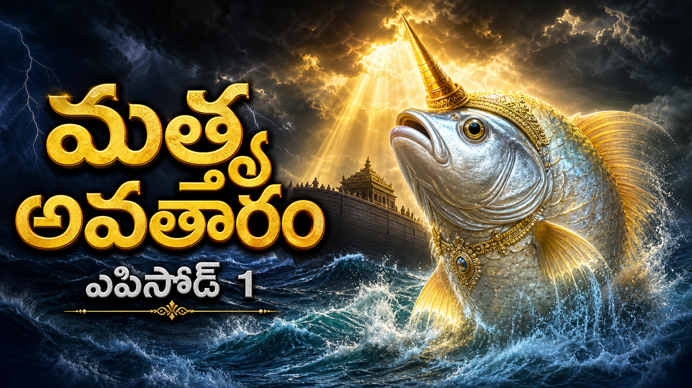
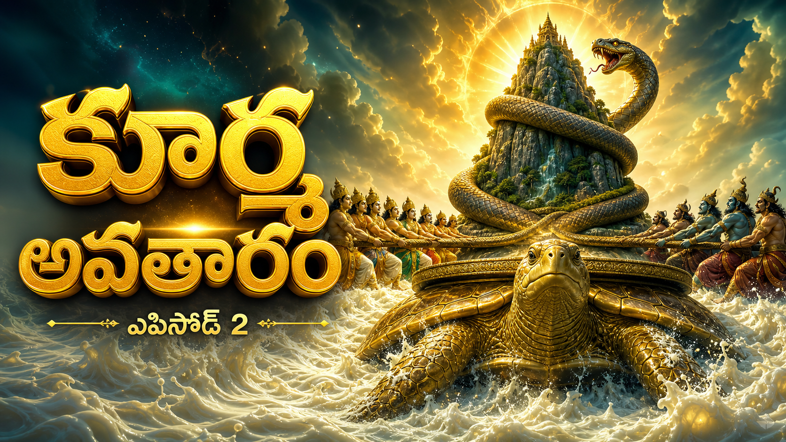
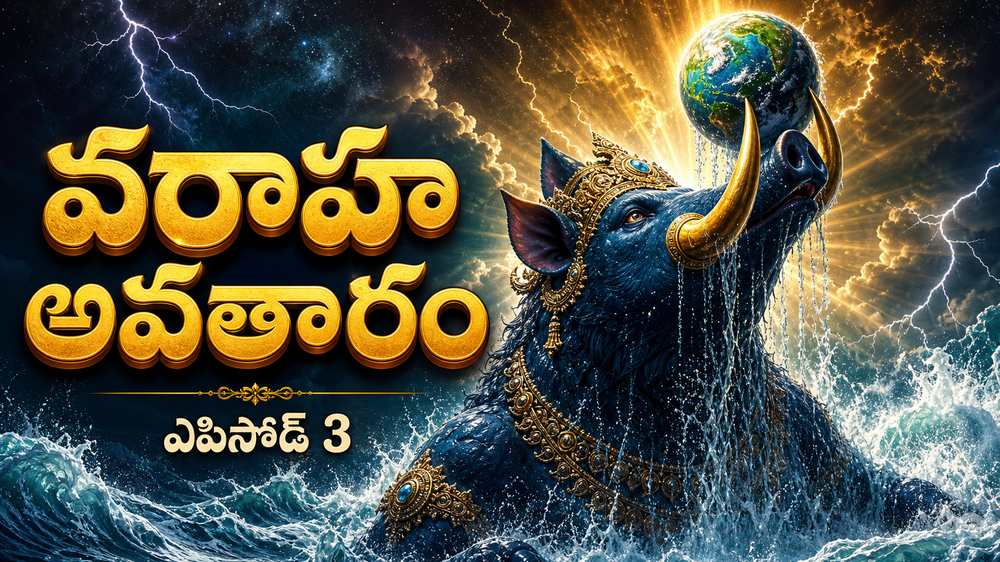
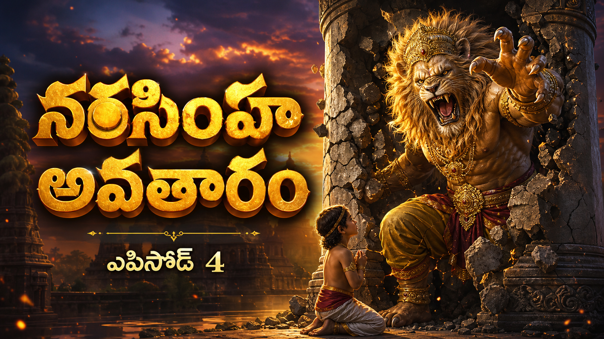
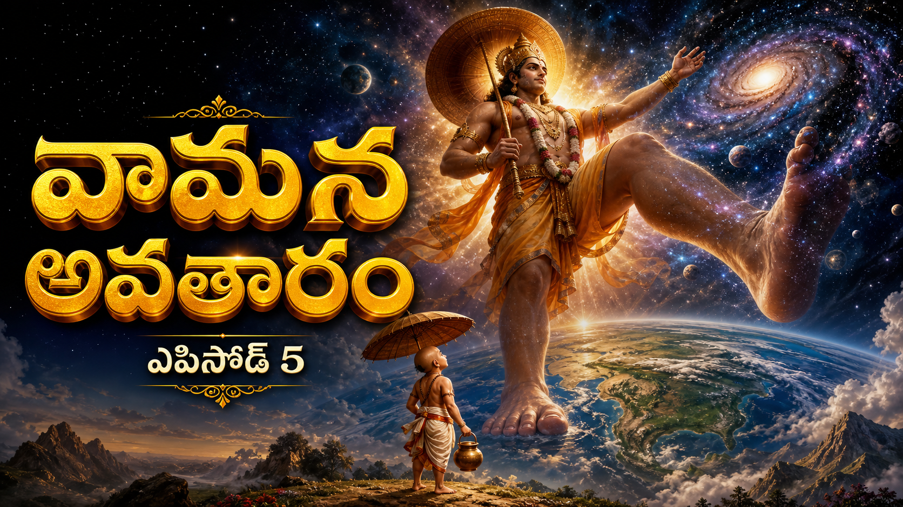
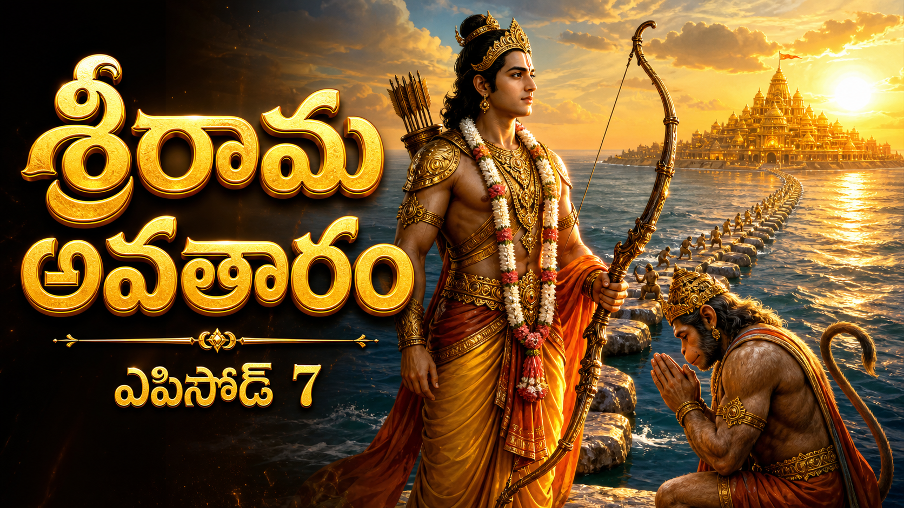
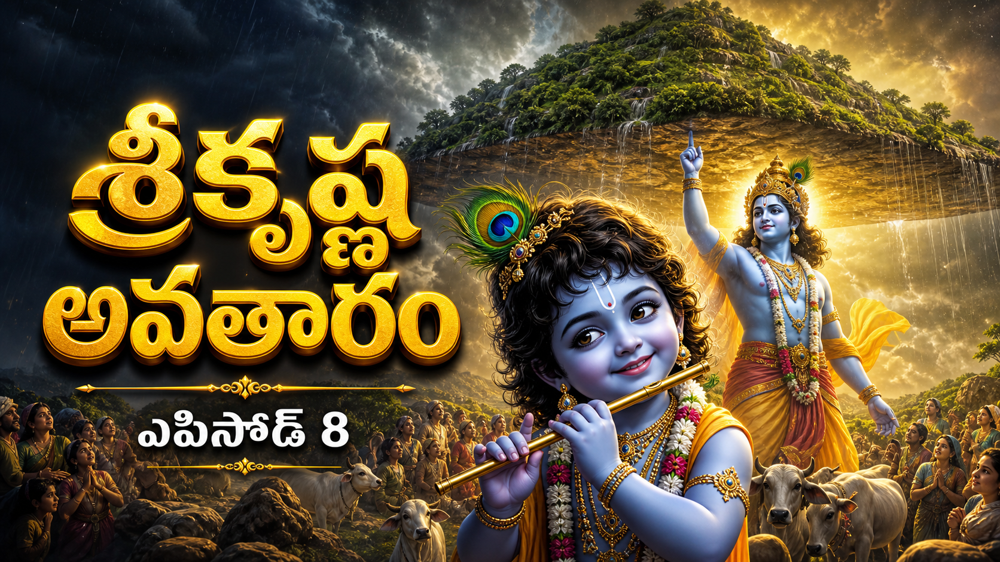
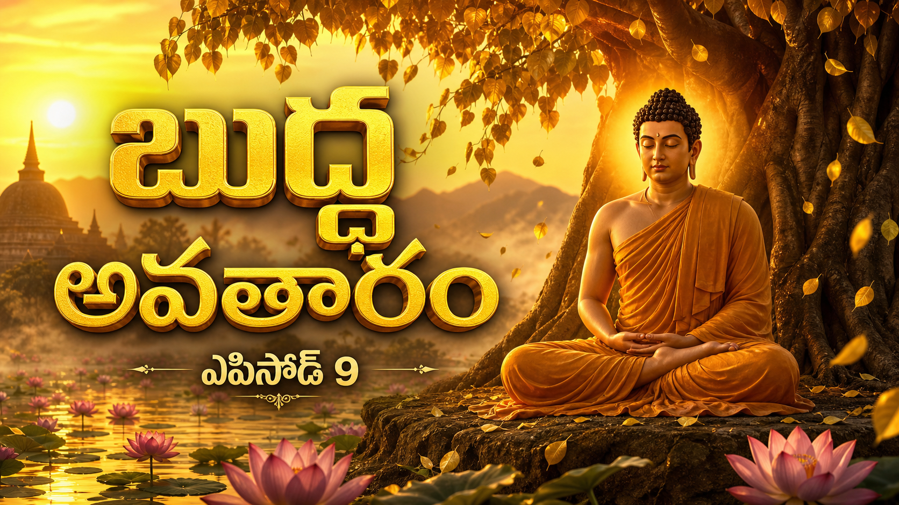
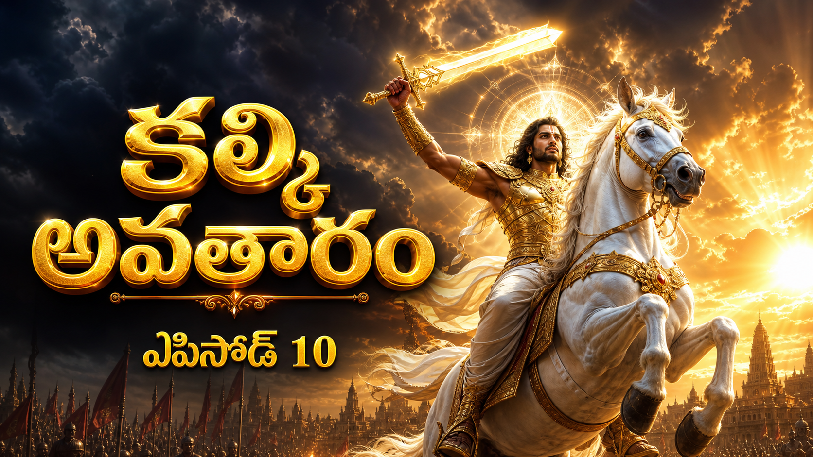

1
🪷 మత్స్య అవతారం
మహా ప్రళయం
READY
నేరేషన్: 982 తెలుగు పదాలు · 7,125 అక్షరాలు ·
కాలం: 9:23
⬇ MP3 డౌన్లోడ్ (4.5 MB · 9:23)
📜 స్క్రిప్ట్ చూడండి

2
🐢 కూర్మ అవతారం
సముద్ర మథనం
READY
నేరేషన్: 949 తెలుగు పదాలు · 7,010 అక్షరాలు ·
కాలం: 9:24
⬇ MP3 డౌన్లోడ్ (4.5 MB · 9:24)
📜 స్క్రిప్ట్ చూడండి

3
🐗 వరాహ అవతారం
భూదేవి రక్షణ
READY
నేరేషన్: 938 తెలుగు పదాలు · 6,775 అక్షరాలు ·
కాలం: 9:32
⬇ MP3 డౌన్లోడ్ (4.6 MB · 9:32)
📜 స్క్రిప్ట్ చూడండి

4
🦁 నరసింహ అవతారం
ప్రహ్లాదుని భక్తి
READY
నేరేషన్: 896 తెలుగు పదాలు · 6,584 అక్షరాలు ·
కాలం: 8:59
⬇ MP3 డౌన్లోడ్ (4.3 MB · 8:59)
📜 స్క్రిప్ట్ చూడండి

5
👣 వామన అవతారం
మహాబలి త్రిపాదం
READY
నేరేషన్: 981 తెలుగు పదాలు · 6,941 అక్షరాలు ·
కాలం: 9:20
⬇ MP3 డౌన్లోడ్ (4.5 MB · 9:20)
📜 స్క్రిప్ట్ చూడండి
6
🪓 పరశురామ అవతారం
క్షాంతి మరియు ధర్మం
READY
నేరేషన్: 902 తెలుగు పదాలు · 6,525 అక్షరాలు ·
కాలం: 8:40
⬇ MP3 డౌన్లోడ్ (4.2 MB · 8:40)
📜 స్క్రిప్ట్ చూడండి

7
🏹 శ్రీరామ అవతారం
వనవాసం నుండి రావణ సంహారం
READY
నేరేషన్: 935 తెలుగు పదాలు · 7,091 అక్షరాలు ·
కాలం: 9:22
⬇ MP3 డౌన్లోడ్ (4.5 MB · 9:22)
📜 స్క్రిప్ట్ చూడండి

8
🦚 శ్రీకృష్ణ అవతారం
గోకులం నుండి కంస సంహారం
READY
నేరేషన్: 867 తెలుగు పదాలు · 6,370 అక్షరాలు ·
కాలం: 8:50
⬇ MP3 డౌన్లోడ్ (4.2 MB · 8:50)
📜 స్క్రిప్ట్ చూడండి

నేరేషన్: 0 తెలుగు పదాలు · 0 అక్షరాలు ·
కాలం: —
ఆడియో తయారవుతోంది — తదుపరి టర్న్లో అందుబాటులోకి వస్తుంది.

10
⚔️ కల్కి అవతారం
కలియుగాంతం
PENDING
నేరేషన్: 0 తెలుగు పదాలు · 0 అక్షరాలు ·
కాలం: —
ఆడియో తయారవుతోంది — తదుపరి టర్న్లో అందుబాటులోకి వస్తుంది.